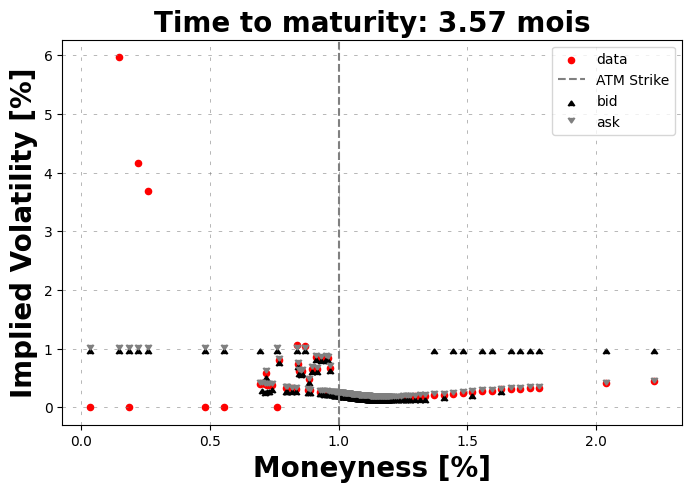
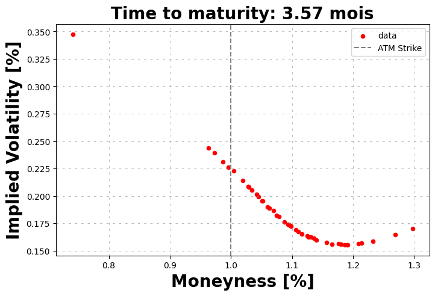
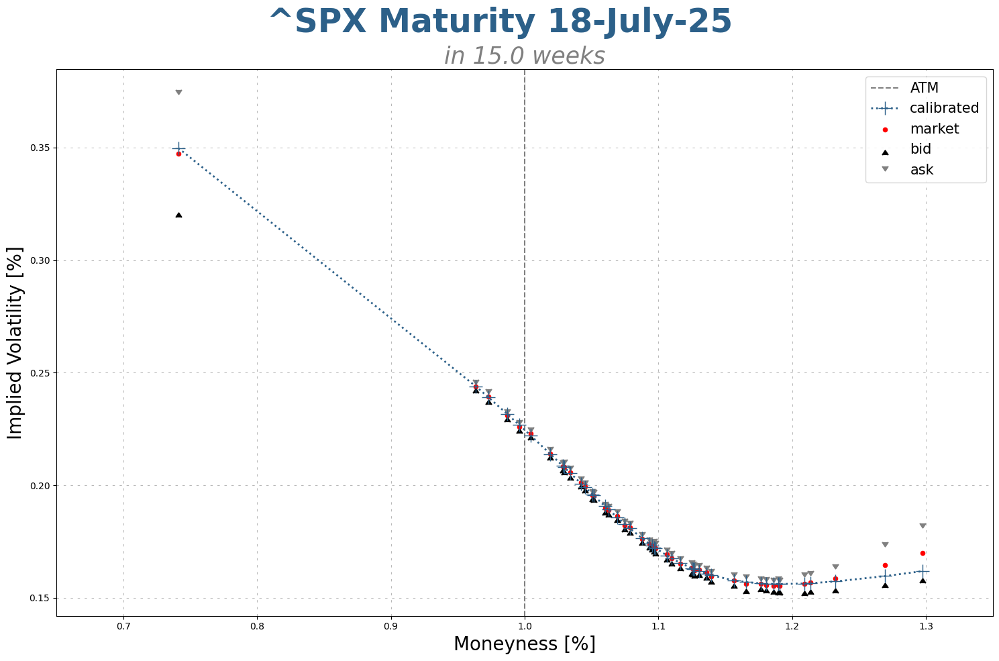

[5]:
from hestonpy.models.heston import Heston
from hestonpy.models.bates import Bates
from hestonpy.models.calibration.volatilitySmile import VolatilitySmile
r = 0.00
Calibration on market data#
Get market data
[6]:
from hestonpy.option.data import get_options_data, filter_data_for_maturity
symbol='^SPX'
all_market_data, spot, maturities = get_options_data(symbol=symbol)
spot
[6]:
np.float64(5396.52001953125)
Choose your smile/maturity
[7]:
maturities
[7]:
('2025-04-04',
'2025-04-07',
'2025-04-08',
'2025-04-09',
'2025-04-10',
'2025-04-11',
'2025-04-14',
'2025-04-15',
'2025-04-16',
'2025-04-17',
'2025-04-21',
'2025-04-22',
'2025-04-23',
'2025-04-24',
'2025-04-25',
'2025-04-28',
'2025-04-29',
'2025-04-30',
'2025-05-01',
'2025-05-02',
'2025-05-05',
'2025-05-06',
'2025-05-08',
'2025-05-09',
'2025-05-16',
'2025-05-30',
'2025-06-20',
'2025-06-30',
'2025-07-18',
'2025-07-31',
'2025-08-15',
'2025-08-29',
'2025-09-19',
'2025-09-30',
'2025-10-17',
'2025-11-21',
'2025-12-19',
'2025-12-31',
'2026-01-16',
'2026-02-20',
'2026-03-20',
'2026-03-31',
'2026-04-17',
'2026-06-18',
'2026-12-18',
'2027-12-17',
'2028-12-15',
'2029-12-21',
'2030-12-20')
[8]:
maturity = maturities[28]
full_market_data = filter_data_for_maturity(all_market_data, maturity)
full_market_data.head()
[8]:
| Call Price | Bid | Ask | Implied Volatility | Strike | Volume | Time to Maturity | Maturity | |
|---|---|---|---|---|---|---|---|---|
| 0 | 5357.61 | 5133.6 | 5145.5 | 0.000010 | 200.0 | 1.0 | 0.297619 | 2025-07-18 |
| 1 | 5062.65 | 5188.8 | 5206.3 | 5.966830 | 800.0 | 2.0 | 0.297619 | 2025-07-18 |
| 2 | 4589.30 | 4345.0 | 4362.7 | 0.000010 | 1000.0 | 1.0 | 0.297619 | 2025-07-18 |
| 3 | 4676.42 | 4797.4 | 4815.3 | 4.155095 | 1200.0 | 18.0 | 0.297619 | 2025-07-18 |
| 4 | 4500.20 | 4605.1 | 4620.0 | 3.680169 | 1400.0 | 1.0 | 0.297619 | 2025-07-18 |
Sanity check of the data from yfinance
[9]:
time_to_maturity = full_market_data['Time to Maturity'].iloc[0]
strikes = full_market_data['Strike'].values
bid_prices = full_market_data["Bid"].values
ask_prices = full_market_data['Ask'].values
market_ivs = full_market_data['Implied Volatility'].values
market_prices = full_market_data['Call Price'].values
marketVolatilitySmile = VolatilitySmile(
strikes=strikes,
time_to_maturity=time_to_maturity,
atm=spot,
market_ivs=market_ivs,
r=r
)
marketVolatilitySmile.plot(bid_prices=bid_prices, ask_prices=ask_prices)

Hmmm it is ugly, run some filters and use the mid implied volatility to denoise the market,
\[\frac{\sigma_{bid}+\sigma_{ask}}{2}\]
[10]:
market_data = marketVolatilitySmile.filters(full_market_data)
marketVolatilitySmile.plot()
market_data.head()

[10]:
| Call Price | Bid | Ask | Implied Volatility | Strike | Volume | Time to Maturity | Maturity | Mid ivs | Ask ivs | Bid ivs | Mid Price | |
|---|---|---|---|---|---|---|---|---|---|---|---|---|
| 13 | 1474.75 | 1411.0 | 1426.2 | 0.377997 | 4000.0 | 731.0 | 0.297619 | 2025-07-18 | 0.347358 | 0.373705 | 0.321010 | 1418.60 |
| 39 | 429.56 | 389.0 | 391.4 | 0.247988 | 5200.0 | 40.0 | 0.297619 | 2025-07-18 | 0.243961 | 0.245046 | 0.242876 | 390.20 |
| 42 | 393.78 | 354.8 | 358.3 | 0.243847 | 5250.0 | 40.0 | 0.297619 | 2025-07-18 | 0.239403 | 0.240951 | 0.237855 | 356.55 |
| 46 | 467.57 | 305.5 | 307.8 | 0.234829 | 5325.0 | 38.0 | 0.297619 | 2025-07-18 | 0.231043 | 0.232036 | 0.230050 | 306.65 |
| 49 | 376.33 | 274.5 | 276.9 | 0.229813 | 5375.0 | 250.0 | 0.297619 | 2025-07-18 | 0.226052 | 0.227078 | 0.225026 | 275.70 |
We can now calibrate an Heston model and an Bates model on the cleaned data
Calibration with an Heston model#
[11]:
params = {
"kappa": 1.25,
"theta": 0.06,
"sigma": 0.6,
"rho": -0.8,
}
heston = Heston(spot=spot, vol_initial=0.06, r=r, drift_emm=0, **params)
initial_params = marketVolatilitySmile.calibration(
price_function=heston.call_price,
guess_correlation_sign='negative',
initial_guess=list(params.values()),
speed='local',
)
initial_guess = [initial_params['kappa'], initial_params['theta'], initial_params['sigma'], initial_params['rho']]
calibrated_params = marketVolatilitySmile.calibration(
price_function=heston.call_price,
guess_correlation_sign='negative',
initial_guess=initial_guess,
power='mse',
speed='global',
)
marketVolatilitySmile.plot(
calibrated_prices=heston.call_price(strike=marketVolatilitySmile.strikes, time_to_maturity=time_to_maturity, **calibrated_params),
maturity=maturity
)
calibrated_params
Calibrated parameters: v0=0.051 | kappa=0.582 | theta=0.182 | sigma=0.708 | rho=-0.817
at minimum 0.180315 accepted 1
Parameters: kappa=0.582 | theta=0.182 | sigma=0.708 | rho=-0.817
at minimum 0.180315 accepted 1
Parameters: kappa=0.582 | theta=0.182 | sigma=0.708 | rho=-0.817
at minimum 0.180315 accepted 1
Parameters: kappa=0.582 | theta=0.182 | sigma=0.708 | rho=-0.817
at minimum 0.180315 accepted 1
Parameters: kappa=0.582 | theta=0.182 | sigma=0.708 | rho=-0.817
at minimum 0.180315 accepted 1
Parameters: kappa=0.582 | theta=0.182 | sigma=0.708 | rho=-0.817
at minimum 0.180315 accepted 1
Parameters: kappa=0.582 | theta=0.182 | sigma=0.708 | rho=-0.817
at minimum 0.180315 accepted 1
Parameters: kappa=0.582 | theta=0.182 | sigma=0.708 | rho=-0.817
at minimum 0.180324 accepted 1
Parameters: kappa=0.594 | theta=0.179 | sigma=0.709 | rho=-0.817
at minimum 0.180315 accepted 1
Parameters: kappa=0.582 | theta=0.182 | sigma=0.708 | rho=-0.817
at minimum 0.180315 accepted 1
Parameters: kappa=0.582 | theta=0.182 | sigma=0.708 | rho=-0.817
['success condition satisfied'] True
Calibrated parameters: v0=0.051 | kappa=0.582 | theta=0.182 | sigma=0.708 | rho=-0.817

[11]:
{'vol_initial': np.float64(0.05109935754345381),
'kappa': np.float64(0.5815576684696807),
'theta': np.float64(0.1816239411613502),
'sigma': np.float64(0.707675064288899),
'rho': np.float64(-0.8170984923714757),
'drift_emm': 0}
Calibration with a Baites model#
[12]:
calibrated_params
[12]:
{'vol_initial': np.float64(0.05109935754345381),
'kappa': np.float64(0.5815576684696807),
'theta': np.float64(0.1816239411613502),
'sigma': np.float64(0.707675064288899),
'rho': np.float64(-0.8170984923714757),
'drift_emm': 0}
[15]:
params = {
"kappa": 1.25,
"theta": 0.06,
"sigma": 0.6,
"rho": -0.5,
"lambda_jump": 1.0,
"mu_J": -0.1,
'sigma_J': 0.3
}
bates = Bates(spot=spot, vol_initial=0.06, r=r, drift_emm=0, **params)
initial_params = marketVolatilitySmile.calibration(
price_function=bates.call_price,
guess_correlation_sign='negative',
initial_guess=list(params.values()),
power='mse',
speed='local',
)
initial_guess = [initial_params['kappa'], initial_params['theta'], initial_params['sigma'], initial_params['rho'],
initial_params['lambda_jump'], initial_params['mu_J'], initial_params['sigma_J']]
calibrated_params = marketVolatilitySmile.calibration(
price_function=bates.call_price,
guess_correlation_sign='negative',
initial_guess=initial_guess,
power='mse',
speed='global',
)
marketVolatilitySmile.plot(
calibrated_prices=bates.call_price(strike=marketVolatilitySmile.strikes, time_to_maturity=time_to_maturity, **calibrated_params),
maturity=maturity
)
calibrated_params
Calibrated parameters:
v0=0.051 | kappa=1.170 | theta=0.086 | sigma=0.802 | rho=-0.796 | lambda_jump=0.569 | mu_J=-0.087 | sigma_J=0.050
at minimum 0.138248 accepted 1
Parameters: kappa=1.170 | theta=0.086 | sigma=0.802 | rho=-0.796 | lambda_jump=0.569 | mu_J=-0.087 | sigma_J=0.050
at minimum 0.137477 accepted 1
Parameters: kappa=1.816 | theta=0.070 | sigma=0.865 | rho=-0.786 | lambda_jump=0.509 | mu_J=-0.108 | sigma_J=0.050
at minimum 0.137710 accepted 1
Parameters: kappa=1.518 | theta=0.076 | sigma=0.836 | rho=-0.790 | lambda_jump=0.526 | mu_J=-0.099 | sigma_J=0.050
at minimum 0.137298 accepted 1
Parameters: kappa=2.585 | theta=0.060 | sigma=0.944 | rho=-0.774 | lambda_jump=0.510 | mu_J=-0.122 | sigma_J=0.050
at minimum 0.137585 accepted 1
Parameters: kappa=1.651 | theta=0.073 | sigma=0.848 | rho=-0.788 | lambda_jump=0.516 | mu_J=-0.103 | sigma_J=0.050
at minimum 0.137499 accepted 1
Parameters: kappa=1.773 | theta=0.070 | sigma=0.861 | rho=-0.786 | lambda_jump=0.510 | mu_J=-0.107 | sigma_J=0.050
at minimum 0.137303 accepted 1
Parameters: kappa=2.893 | theta=0.057 | sigma=0.977 | rho=-0.770 | lambda_jump=0.514 | mu_J=-0.126 | sigma_J=0.050
at minimum 0.177881 accepted 1
Parameters: kappa=0.002 | theta=2.682 | sigma=0.530 | rho=-0.786 | lambda_jump=0.063 | mu_J=-0.413 | sigma_J=0.050
['success condition satisfied'] True
Calibrated parameters:
v0=0.051 | kappa=2.585 | theta=0.060 | sigma=0.944 | rho=-0.774 | lambda_jump=0.510 | mu_J=-0.122 | sigma_J=0.050
[15]:
{'vol_initial': np.float64(0.05109935754345381),
'kappa': np.float64(2.5854664613188842),
'theta': np.float64(0.059849220476281995),
'drift_emm': 0,
'sigma': np.float64(0.9439656148672756),
'rho': np.float64(-0.7743390297835321),
'lambda_jump': np.float64(0.5102923508017523),
'mu_J': np.float64(-0.12185194574808611),
'sigma_J': np.float64(0.05)}
Fancy plot
[16]:
from datetime import datetime
import numpy as np
import matplotlib.pyplot as plt
import matplotlib.font_manager as font_manager
font_legend = font_manager.FontProperties(
style='normal',
size=20,
)
fontdict = {
"fontsize": 20,
# "fontweight": "bold"
}
fontdict_suptitle = {
'fontsize': 30,
'fontweight': 'bold'
}
fontdict_title = {
'fontsize': 30,
'fontweight': 'bold'
}
calibrated_prices = bates.call_price(strike=marketVolatilitySmile.strikes, time_to_maturity=time_to_maturity, **calibrated_params)
calibrated_ivs = marketVolatilitySmile.compute_smile(prices=calibrated_prices)
ask_ivs = market_data['Ask ivs'].values
bid_ivs = market_data['Bid ivs'].values
forward = marketVolatilitySmile.atm * np.exp(marketVolatilitySmile.r * marketVolatilitySmile.time_to_maturity)
plt.figure(figsize=(15, 10))
plt.axvline(1, linestyle="--", color="gray", label='ATM')
plt.plot(marketVolatilitySmile.strikes / forward, calibrated_ivs, marker='+', color='#2c6089', linestyle="dotted", markersize=14, linewidth=2, label='calibrated')
plt.scatter(marketVolatilitySmile.strikes / forward, marketVolatilitySmile.market_ivs, marker='o', color='red', s=20, label='market')
plt.scatter(marketVolatilitySmile.strikes / forward, bid_ivs, marker=6, color='black', s=40, label='bid')
plt.scatter(marketVolatilitySmile.strikes / forward, ask_ivs, marker=7, color='gray', s=40, label='ask')
plt.xlabel("Moneyness [%]", fontdict=fontdict)
plt.ylabel("Implied Volatility [%]", fontdict=fontdict)
plt.xlim((0.65, 1.35))
date = datetime.strptime(maturity, '%Y-%m-%d').date().strftime("%d-%B-%y")
title = f"{symbol} Maturity {date}"
plt.suptitle(title, fontsize=35, fontweight='bold', color='#2c6089')
plt.title(f"in {marketVolatilitySmile.time_to_maturity * 252 / 5:.1f} weeks", color="grey", style='italic', fontsize=25)
plt.grid(visible=True, which="major", linestyle="--", dashes=(5, 10), color="gray", linewidth=0.5, alpha=0.8)
plt.legend(fontsize=15)
plt.tight_layout()
plt.show()
